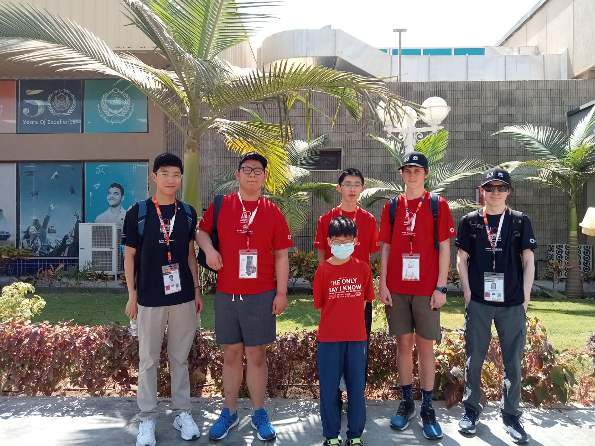

NZOI is organised by a group of people who are keen to share their enjoyment of informatics with New Zealand students. This group includes teachers, professional programmers, and university students. Many in the group have been through the NZOI training programme and competed in an International Olympiad in Informatics.
The group runs a programming contest which has several events throughout the year. It also holds a training camp in January each year to which the top programming students are invited.
The group relies heavily on sponsorship from tertiary organisations and business. The sponsorship subsidises the society’s activities including the supervising adults who are required to accompany the students selected to compete in the international olympiad event.
The society provides training opportunities in Informatics to selected New Zealand students who are currently enrolled in a New Zealand secondary school. The society selects, from those it has trained, students to attend the International Olympiad in Informatics. The society endeavours to foster informatics in New Zealand secondary schools. The society aims to be a non-profit group with all funds going to fulfill the purposes above.
The 2024 IOI was held in Alexandria, Egypt in the first week of September.
The team of Victor Coen (Mount Albert Grammar School), GuanHan Li (Murrays Bay Intermediate), Jesse Zhang (Macleans College) and Peter Zhou (Auckland Grammar School) achieved success against the top 4 students from 94 other countries.
GuanHan won a Silver medal, and Victor won a Bronze medal. We are very proud of these four students who put in so much hard work to represent New Zealand. GuanHan's age made him popular with other contestants who were keen to be photographed with him on the excursions.
In addition, GuanHan and Victor opted to travel on to Riyadh, Saudi Arabia where they competed in the inaugural International Artificial Intelligence Olympiad (IAIO) against 24 other countries. Victor won a gold medal (New Zealand's first in Informatics or AI!) and GuanHan won a bronze.
